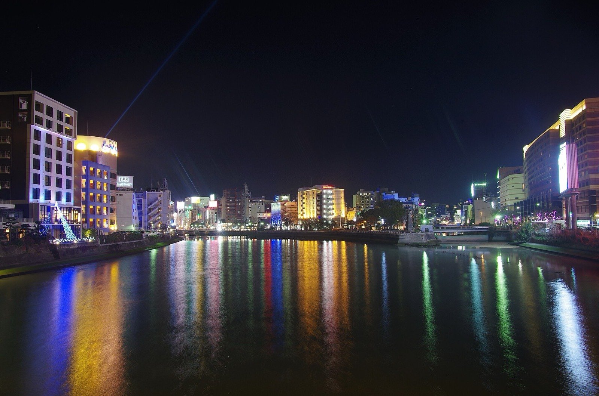
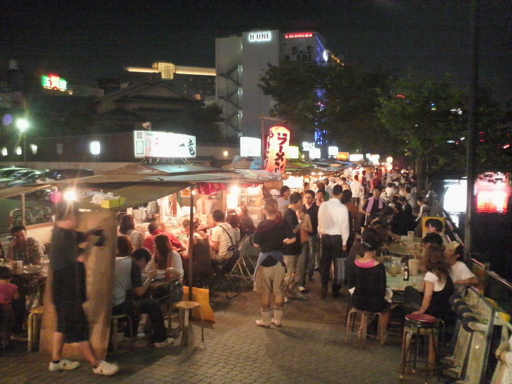
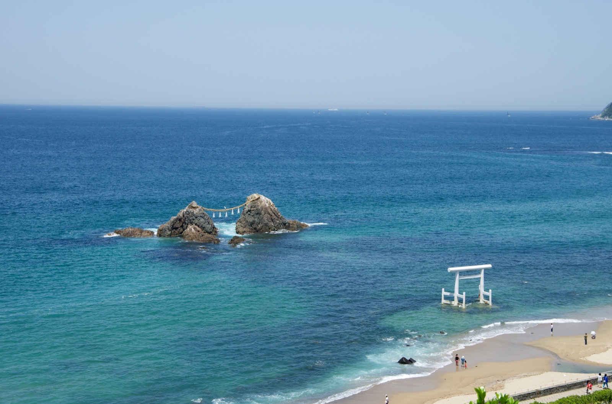
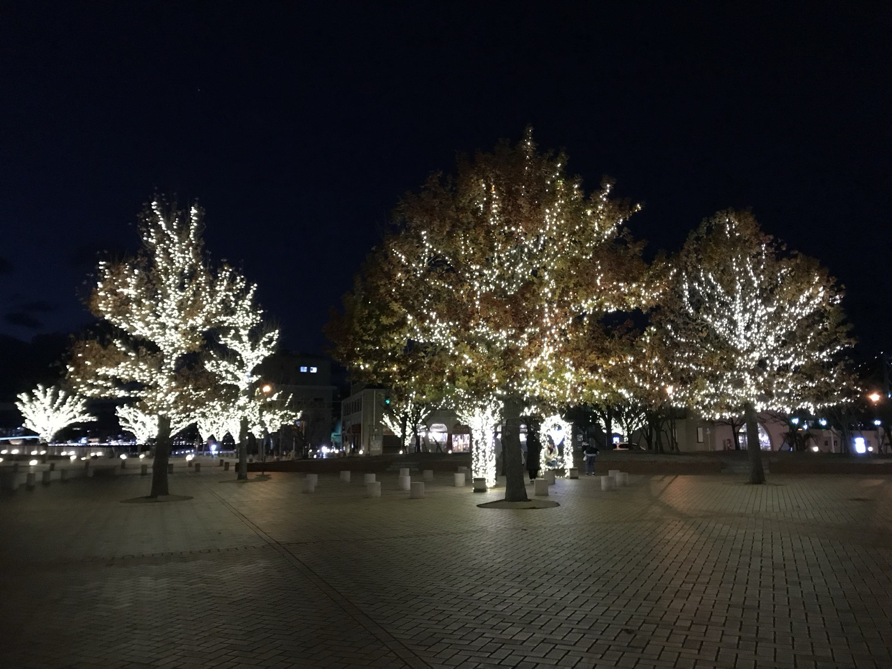
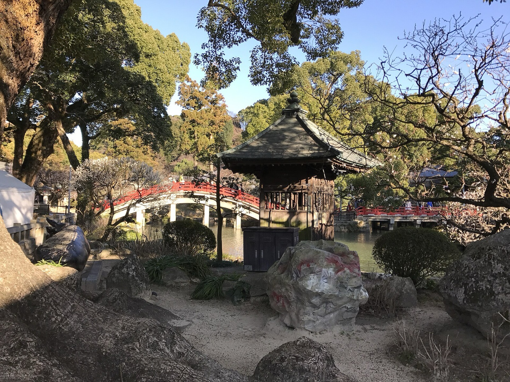
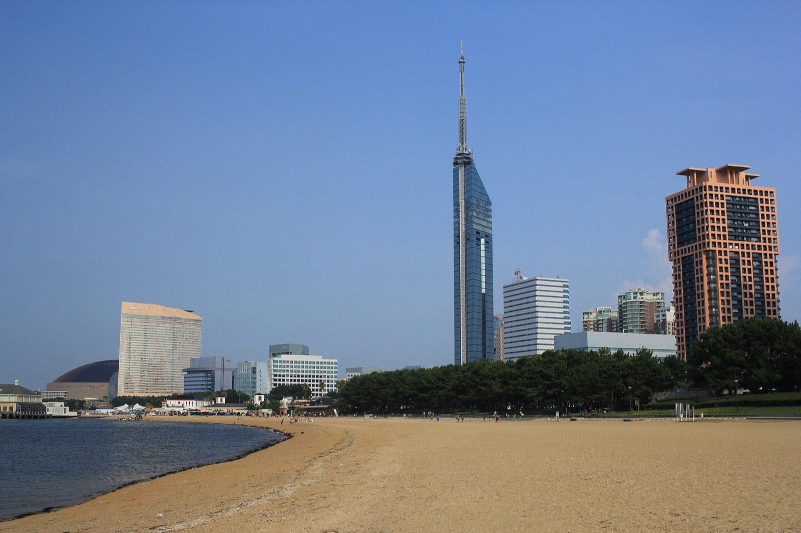

福岡 6 天 5 夜 家族旅遊
全程住博多 Hotel Iori 公寓、不換飯店、有廚房洗衣機、節奏寬鬆
6 天行程速覽
ITINERARY AT A GLANCE
MON2026.07.27
DAY1抵達福岡、博多舊城散步與天神屋台夜
TUE2026.07.28
DAY2KKday 一日遊 · 熊本城、阿蘇草千里與火山
WED2026.07.29
DAY3糸島海岸自駕、夫婦岩白鳥居與海鮮丼
THU2026.07.30
DAY4門司港レトロ半日、博多 A5 和牛與伴手禮採買
FRI2026.07.31
DAY5太宰府參拜、中洲鰻魚、採買收尾與彈性時間

中洲屋台 · Photo by Yoshikazu TAKADA / Wikimedia Commons, CC BY 2.0抵達福岡、博多舊城散步與天神屋台夜
下午 13:05 落地、先到 Iori 寄放行李(4 人 4 大行李叫大型計程車、15:00 前自助寄放)、在房內浴缸沖個澡放鬆。傍晚在博多舊城慢慢走——東長寺的福岡大佛、有頂蓋遮陽的川端商店街、博多總鎮守櫛田神社；晚上到天神吃屋台、逛夏まつり感受攤販氛圍。第一天不排滿、留體力給後面幾天。
東長寺 · 福岡大佛40 分
大佛殿 ¥100大佛殿在 2 樓 · 有樓梯16:45 關門
Google Maps
為什麼·怎麼逛收合
為什麼值得
806 年空海開創的真言宗古剎、地鐵祇園站即達、不用舟車勞頓。主角福岡大佛是高 10.8 公尺、重 30 噸的檜木釋迦如來坐像、日本最大的木造坐佛、氣勢十足又免爬山，很適合抵達日輕鬆走。
怎麼逛
- 先看境內的木造千手觀音（重要文化財）與 26 公尺的五重塔（外觀拍照、塔內不開放）
- 上 2 樓大佛殿參拜福岡大佛
- 佛像台座下「地獄·極樂巡禮」：走一段全黑暗道、摸到牆上「佛之輪」就代表通往極樂——體驗型小關卡、大人小孩都覺得有趣
大佛殿內禁止攝影（所以頭圖不用室內照）。
營業時間
拜觀 09:00–16:45 · 境內免費 · 大佛殿＋地獄極樂巡禮 ¥100
提醒
大佛殿在 2 樓需走樓梯、地獄巡禮是狹窄全黑的暗道、要扶牆慢行。媽媽阿姨膝蓋不好可放慢扶好、或只在 1 樓境內與大佛殿參拜、跳過暗道。
川端商店街 穿越25 分
有頂蓋遮陽約 130 店
Google Maps
特色·逛什麼收合
特色
博多歷史最悠久的拱廊商店街、全長約 400 公尺、約 130 間新舊店家、全程有頂蓋遮陽避雨——怕曬的媽媽阿姨很友善，是抵達日下午散步的好選擇。
怎麼逛
- 從東長寺側進、往櫛田神社方向直直穿過去約 400 公尺、20-30 分剛好
- 看到八番山笠（巨大山笠展示）就是川端ぜんざい廣場，值得停下來拍
- 全程有頂蓋、冷氣店家可躲，媽媽阿姨走累隨時能坐
- 抵達日不用買齊，看到喜歡的記下來、後面幾天還有博多站與天神
值得逛的店
- 川端ぜんざい廣場——名物紅豆湯（北海道大納言＋現烤麻糬）、旁邊擺八番山笠。僅週五六日及假日營業、7/27 週一沒開 Maps
- 傳統老鋪（博多人形 / 佛具）——看博多工藝
- 在地小吃店——拉麵到小點、隨走隨吃
買什麼
- 博多人形 / 博多織小物（傳統工藝伴手禮）
- 明太子、博多銘菓
營業時間
各店約 10:00–19:00（依店而定）· 拱廊全天可通行
櫛田神社20 分
參拜免費授与所 9:00–17:00境內平坦好走
Google Maps
為什麼·怎麼逛收合
為什麼值得
博多的總鎮守、在地人暱稱「お櫛田さん」、是 UNESCO 無形文化遺產「博多祇園山笠」祭典的中心。就算沒趕上七月山笠正日、這裡常設一座高約 13 公尺的飾山笠、一年四季都看得到那份震撼、是理解博多文化最快的一站。
怎麼逛
- 飾り山笠——抬頭即見的巨型裝飾山車、看正反兩面題材
- 夫婦銀杏——象徵夫妻圓滿、帶長輩求家庭平安；另有千年御神木「櫛田の銀杏」
- 注連懸——樓門處的注連繩裝飾
營業時間
本殿 04:00–22:00 · 御朱印 / 授与所 09:00–17:00 · 參拜免費
提醒
境內平坦好走、適合長輩；下午順路，看完飾山笠拍拍照就好、不用久留。
Full Full パンとワイン（天神3丁目）· 明太法國麵包
先買再去屋台閉店 20:00/21:00 · 常售完週二休 · 今天週一開
Google Maps
為什麼今天·買什麼收合
為什麼一定要今天買
這間週二公休，而我們 7/28（二）整天在阿蘇——今天是全程唯一買得到的日子。位置在昭和通り沿い、天神3-3-5，離屋台小金ちゃん走幾分鐘、開到 21:00，吃完屋台順路帶走完全不繞路。
買什麼
- 明太フランス——招牌，法國麵包夾明太子奶油，福岡代表名物
- 其他麵包 3-4 個——明天 07:00 早餐＋車上補給，一人一個剛好
營業時間
10:00–20:00 或 21:00（來源不一）· 週二休 · 天神3-3-5 · 地鐵天神站步行約 4 分 · 電話 092-791-7431 確認閉店與留貨
提醒
招牌明太フランス是人氣品、閉店 20:00 或 21:00 說法不一、我們 19:40 到若 20:00 打烊只剩 20 分、且傍晚常售完，買不到就隨緣、明天早餐回到原本的便利商店計畫。想確保可先電話 092-791-7431 問。
天神屋台 小金ちゃん
不需訂 · 排隊現金為主¥820 起
Google Maps
建議點·現場收合
特色
1968 年創業、焼きラーメン（把拉麵下鐵板炒到焦香、只有福岡有）的發祥屋台、在地人與旅客都愛。位在天神親不孝通り一帶、看老闆現場炒麵也是體驗。
建議點
- 焼きラーメン（招牌焦香炒拉麵，約 ¥820）——發祥店必點
- どて焼き（味噌燉牛筋，約 ¥730）——暖胃下酒（牛筋非內臟、媽媽阿姨可斟酌）
- 明太卵焼き（明太子玉子燒，約 ¥750）——溫和好入口
營業時間
一–三 18:30–翌 01:00 · 五六 18:30–翌 02:00 · 週四·週日休（7/27 週一營業）
現場
屋台座位有限、多為並排高腳吧台椅、晚上熱門常需排隊、現金為主備零錢。建議 18:30 一開店就到避開排隊；媽媽阿姨若累、環境擁擠久候舒適度一般，可改到旁邊天神夏まつり的屋台區（有座位）吃。
天神夏まつり~21:00
17:30–22:00 · 免費盆踊り 19/20/21 點無花火
Google Maps
看什麼收合
特色（已查證）
2026/7/17–8/23 確實舉辦、38 天無休、每日 17:30–22:00、免費入場、福岡市役所西側ふれあい廣場(天神1-8-1)。2026 是軟銀鷹(SoftBank Hawks)聯名版:櫓(舞台)採鷹隊裝飾、選手大橫幅圍繞會場、可跟喜歡的選手肖像拍照、吉祥物『むなかったん』出沒。就在小金ちゃん所在的天神、吃完屋台走過去就到(可惜無花火)。
能參與什麼
- 盆踊り——19:00 / 20:00 / 21:00 各一場約 30 分、炭坑節＋流行歌的新感覺盆踊り、遊客可以下場一起跳(我們 20:00 那場剛好)
- 縁日遊戲——撈水球(スーパーボールすくい)、射的,像動漫裡的夏日祭典、拍照超有氛圍
- 和太鼓表演——以櫓為舞台的太鼓演奏;每晚 19:40–20:00 還有藝人/在地音樂人舞台
- 軟銀鷹——選手橫幅拍照、吉祥物合照;鷹隊客場比賽日(7/18–8/14 共 15 場)大螢幕直播夜間賽(デーゲーム除外)
攤販美食（約 32 家九州縁日屋台）
- 炭火焼鳥・牛串・烤魷魚——夜市熱食
- 焼きラーメン・日田焼きそば・糸島豬肉炒麵——福岡在地麵食
- 明太子お好み焼き・餃子・烤小籠包——鹹食小點
- 冰淇淋・和菓子・起司球・長薯條——甜點小食、邊走邊吃
時間 · 地點
每日 17:30–22:00（L.O.21:45）· 免費 · 福岡市役所西側 ふれあい廣場 · 官方 tenjinnatumaturi.com、行前確認當日場次
提醒
無花火(跟大阪天神祭是不同活動);雨天可能中止;禁止接觸出演者/求簽名握手、擁擠時不保證全員觀覽。行前一週上官網看當日場次與出店。
今晚別玩太晚
明天是全程最遠征的一天(06:45 起、08:00 準時發車逾時不候);加上今晚回去要在 Iori 工作人員 22:00 下班前 check-in 拿房卡——所以夏まつり 21:00 前撤、21:20 回到 Iori check-in。除非已跟 Iori 要到 22:00 後自助取鑰匙密碼、才能待晚一點。
今天遇雨 / 颱風
小雨：川端商店街全程有頂蓋、東長寺與櫛田神社都在市中心、照常慢走。大雨：砍戶外散步、直接進飯店休息，晚餐改博多站或 Canal City 室內；屋台看天候可能不出攤、改室內拉麵（ShinShin / 一幸舎）。抵達班機若延誤，行程整體往後順延、以進飯店休息為優先。
 阿蘇 草千里ヶ浜 · Photo by Raita Futo / Wikimedia Commons, CC BY 2.0
阿蘇 草千里ヶ浜 · Photo by Raita Futo / Wikimedia Commons, CC BY 2.0
KKday 一日遊 · 熊本城、阿蘇草千里與火山
全程最遠征的一天，也刻意排在旅程前段——大家剛休息一晚、體力最好，把唯一一件「不能改、不能提早離團」的固定行程先做掉，後面四天就全是可以自己調度的彈性。今天不用開車、不用導航、不用當導遊，交給中文導遊，崴和哥哥終於能當一天乘客。上午先走日本三大名城之一的熊本城，中午在城彩苑吃熊本名物，下午上阿蘇看草千里草原與火山口，傍晚回博多吃碗清爽烏龍收尾。
早餐 · Full Full 麵包（昨晚買）+ 便利商店補給
麵包昨晚已買順買飯糰・水・暈車藥
Google Maps
建議點·提醒收合
建議點
- Full Full 明太フランス（Day1 天神買）——房間吃，07:00 起床後最省時
- 便利商店補給——飯糰、三明治、水、電解質飲料上車備用
- 暈車藥先服——熊本到阿蘇山路多彎、易暈車者出發前吃
提醒
阿蘇草千里餐廳少、旺季排隊；午餐建議在熊本城城彩苑先吃飽（11:30 左右、選擇多），或吃備好的飯糰，別把午餐全押在山上排隊。若昨晚麵包沒買到，早餐就回到便利商店方案。
KKday 集合（07:30 到場）· 阿蘇熊本一日遊（A方案）
07:30 到場 · 07:45 集合 · 08:00 發車中文導遊 · 保證出團逾時不候
Google Maps
含什麼·提醒收合
含什麼
- 中／英／日／韓 四語導遊、包租巴士（往返博多）
- 阿蘇火山口接駁車費、停車過路加油費、保險、司機
- 1 人成團、立即確認、保證出團
- 取消：4 天前免費／2-3 天前收 50%／0-1 天不退
不含（要自己準備）
- 三餐自理（車上無供餐、午餐在景點自付）
- 熊本城天守閣門票 約 ¥800 / 人（現場買）
- 阿蘇火山博物館、騎馬等各景點門票
火山口（先調期待值）
阿蘇中岳自 2026/6/21 起噴火警戒 Level 2、火口周邊 1km 規制。KKday 商品頁已明寫「火山口目前處於關閉狀態（恢復時間未定）」，行程會改為延長草千里遊覽時間。所以請直接把主菜當成草千里大草原 + 熊本城，火口若當天恢復開放算彩蛋。
健康提醒（務必先確認）
此團明訂 氣喘、癲癇不可參加（火山有毒氣體風險）；高血壓、心臟病等心血管疾病、高齡者需家人陪同參加。出發前先確認媽媽阿姨的身體狀況與帶藥。
帶什麼
帽子＋陽傘＋防曬（草千里遮蔽少、紫外線強）、暈車藥、飯糰與水、輕便外套（山上較涼）、護照、電子憑證。
官方特別提醒
商品頁明寫「請不要安排當天晚上的其他活動」——回程時間會因路況變動。我們今晚的因幡うどん刻意不訂位就是為此，晚回一小時也沒差。另外官方要求集合前 15 分鐘到場、逾時不候，遲到不退費，所以抓 07:30 出現在集合點。
熊本城約 110 分
天守閣門票 ¥800 自理天守閣有電梯・友善城彩苑自由午餐
Google Maps
為什麼·怎麼逛·長輩收合
為什麼值得
加藤清正築城、日本三名城之一，以宏偉的「武者返し」石垣與黑白相間的天守閣聞名。2016 熊本地震重創後歷經修復、天守閣 2021 全面重新開放，內部展示築城史與復原過程，登高可眺望熊本市景。
怎麼逛
- 巴士多停城彩苑（櫻の馬場）一帶，先逛城彩苑吃午餐、買熊本熊周邊
- 走特別參觀動線（空中迴廊）看修復中的石垣、進天守閣（門票自理）
- 時間約 90-110 分、聽導遊集合時間、別逛過頭
午餐（城彩苑）
城彩苑櫻の小路約 20 多家餐廳與食品店，馬肉料理、芥末蓮藕、糰子、冰淇淋都有——這是全天最好的午餐點，建議在這裡吃飽或外帶，別把午餐押在阿蘇山上排隊。
長輩友善
已查熊本城官方：城彩苑 → 熊本城二之丸停車場有免費接駁巴士、約 10-15 分一班、輪椅嬰兒車也能上，媽媽阿姨可搭接駁不必爬坡。天守閣南口售票處旁設有電梯可直接上樓，電梯旁還備有電動輔助輪椅可免費借用（在城彩苑租借受付申請）。入口跟工作人員說「膝が悪く、エレベーターを利用できますか」即可。不想進天守閣也可在城彩苑歇腳等大家。
阿蘇草千里 + 中岳火山口約 110 分
火口官方公告關閉中 · 以草千里為主自由午餐 · 山上餐廳少曝曬強 · 帽子陽傘
Google Maps
看點·火口·長輩收合
看點
草千里是阿蘇環線上約 1km 的大草原，背景是烏帽子岳、中央是雨水匯成的水池，成群牛馬放牧，四季景色各異——即使看不到火口，光是這片草原就值回票價，評論一致好評。旁有阿蘇火山博物館（門票自費）、草千里珈琲焙煎所（山上唯一咖啡廳）。
火口（看當天）
阿蘇中岳現為噴火警戒 Level 2、火口周邊 1km 規制，KKday 官方已公告火山口關閉中、恢復時間未定，當天多半會延長草千里停留。若臨時恢復開放，需搭專用接駁車上火口台（車費此團已含）。以導遊現場說明為準。
自由午餐
若熊本城沒吃飽，這裡可在新草千里景觀餐廳（火山美景）用餐、或吃備好的飯糰。山上餐廳少、旺季排隊久，時間有限，建議簡單解決。
長輩友善
草原遮蔽少、紫外線強，媽媽阿姨務必帽子＋陽傘＋防曬＋補水，不必走到草原深處、在觀景區或咖啡廳看景即可。呼吸道／心臟不適者不要靠近火山氣體區、任何不適立即撤離並告知導遊。
道の駅 阿蘇（阿蘇道路驛站）約 15 分
停留約 15 分阿蘇乳製品・特產
Google Maps
買什麼收合
買什麼
- 阿蘇牛奶 / 冰淇淋 / 布丁——當地現吃、乳製品有名
- 阿蘇特產、伴手禮——常溫好帶的當最後補貨
提醒
停留只有約 15 分、以現吃與快速掃貨為主，別走遠、聽導遊集合時間。
因幡うどん 博多站 · 清爽烏龍
不訂位 · 現場¥800 起博多站 デイトス B1
Google Maps
建議點·現場收合
為什麼今晚吃這個
回程時間有變數（週五＋阿蘇山路容易塞），所以今晚刻意不訂位，回到博多站直接走進去就能吃、晚一小時也沒差。坐了一整天巴士、中午在城彩苑吃了偏重的熊本名物，晚上來碗清爽出汁的烏龍最舒服，媽媽阿姨也不會有負擔。
建議點
- ごぼう天うどん——招牌，牛蒡天婦羅吸飽湯汁入口即化
- 肉ごぼう天うどん（¥980）——崴和哥哥想吃飽選這個
營業時間
平日 11:00–22:00（L.O.21:30）· 博多站 デイトス B1、下車走過來約 5 分
今天遇雨 / 颱風
巴士團全天有車代步、雨天影響小（熊本城與草千里撐傘可走）。颱風：KKday 會在出發前 1 天當地 18:00 決定是否停團、以 Email 通知；若停團，當天改回博多室內收尾（採買 / 打包 / 大濠庭園或博物館）。火山口是否開放另看當天火山活動與規制、與天氣無關——官方已公告火山口關閉中（恢復時間未定）、行程改以草千里為主。

糸島 櫻井二見浦 夫婦岩・白鳥居 · Photo by yuki5287 / Wikimedia Commons, CC BY 2.0糸島海岸自駕、夫婦岩白鳥居與海鮮丼
今天租車跑糸島海岸、由東往西一路推不回頭。上午椰子鞦韆(路上順路 LONDON BUS 紅巴士冰淇淋)、夫婦岩白鳥居、想拜再拜旁邊的櫻井神社;中午海鮮堂冷氣個室吃海鮮丼。下午在海鮮堂決定一個方向:往南白糸の滝避暑玩流しそうめん、或往西芥屋吃花塩布丁看海、或累了直接回,傍晚回博多、還車前先加滿油(満タン返し),還車點(博多口)直結的 KITTE博多 9F 就是おおやま牛腸鍋(晚餐訂 18:30、台灣必吃、阿姨可換豬五花、19:00 前還車、留足加油緩衝)。
早餐 · 博多站 たんや（牛舌早定食）
約 ¥700博多站
Google Maps
建議點收合
建議點
- 牛舌早定食——熱食、份量足、撐得住上午
- 或 コメダ珈琲——想吃輕一點的西式早餐
營業時間
博多站內、多為 07:00 起（各店異）· 08:40 前吃完、08:45 到 Nippon 櫃台
ヤシの木ブランコ（椰子鞦韆）20 分
免費（停車另計）要排隊曝曬強 · 帽子陽傘
Google Maps
怎麼玩·停車收合
特色
在海鮮餐廳「ざうお本店」腹地內、面海的打卡鞦韆，盪起來背景是藍海＋椰子樹，是糸島最紅的拍照點之一、和夫婦岩同一條海岸線上。
怎麼玩
- 蹲低仰角拍人＋椰子樹＋海平面最出片
- 夏季與旺季每座鞦韆常各排約 10 人、可能等 30 分
- 膝蓋不便者不必勉強盪、在旁樹蔭幫忙拍
停車
ざうお停車場約 200 台 · 40 分 ¥300 / 6 小時 ¥1,000（非在ざうお用餐照收費）
提醒
沙地／木棧、夏日曝曬強，務必帽子＋陽傘＋防曬、停留勿過久；一早或接近傍晚人較少、光也柔。
夫婦岩 · 白鳥居（櫻井二見浦）40 分
免費 · 全天開放日本三大夕陽之一海邊風大無遮蔭
Google Maps
看點·提醒收合
看點
離岸約 150m 海面上並立的兩塊夫婦岩（男岩 11.8m、女岩 11.2m、以注連繩相連），岸邊一座純白鳥居。白鳥居當前景、夫婦岩在後是經典構圖；退潮可走近鳥居下拍。
夕陽落岩間？
7/29 不會落在兩岩正中央（只發生在夏至 6 月前後、7 月太陽落點已南移）。仍可拍夕陽海景、只是不對準岩縫。今天中午來、拍藍海白鳥居即可。
提醒
海邊風大、無遮蔭，防曬與補水；走到鳥居／岩邊是沙灘與礫石、地面不平，膝蓋不好者放慢、穿好走的鞋。
櫻井神社（選配・順路）15 分
選配 · 順路免費 · 御守 9-17樹蔭陰涼
Google Maps
為什麼·長輩收合
為什麼值得
距夫婦岩很近的良緣神社(1632 年)、本殿拜殿樓門列為國家重要文化財,山林環抱、氣氛清幽。境內設有遙拜二見浦夫婦岩的場所,求好姻緣。也是『嵐』迷朝聖地。
長輩友善
平緩好走、樹蔭多、可在正午前躲太陽,快拜快拍約 15 分。不下車的請在樹蔭或有冷氣處等、千萬別留在熄火車內(7 月車內高溫極快、危險);趕時間可整站跳過、直接去海鮮堂(12:30 已訂、別壓到)。
糸島海鮮堂 A 蒼海（包廂）· 海鮮丼
已訂 12:30 個室¥2,800 起 / 人無內臟料理・長輩安心
Google Maps
建議點·現場收合
特色
2023 開幕、就在二見浦海岸邊的海鮮丼專門店，設有看得到海的完全個室（蒼海為其一）。整份菜單都是生魚片丼、天婦羅、壽司、沒有肝／腸等內臟料理，媽媽阿姨完全不用避開。冷氣足、正好當午後避暑與休息點。
建議點
- 糸島海鮮丼（並 ¥2,800 / 上 ¥3,800 / 極上 ¥4,800）——招牌、分三級
- 生サーモン丼 ¥2,000 / 炙りサーモン丼 ¥2,300——想清爽選這個
- 多套餐附 イカしゅうまい（花枝燒賣）
營業時間
海岸邊、約午市時段 · 免費停車約 40 台
現場
蒼海為地下個室、留意進出樓梯。丼飯基本單人份、想長輩兩人分一份或加小碗，建議先電話確認（070-4005-7508）。
白糸の滝（選配・避暑）約 80 分
下午三選一 · 當地決定白糸避暑 / 花塩布丁海景 / 直接回想採買也可白糸直売所
Google Maps
為什麼·怎麼玩·長輩收合
為什麼值得
糸島南邊山裡的 24m 瀑布、被綠林環抱,夏天體感涼很多。「ふれあいの里」有流しそうめん(¥600/人、現場申請不用訂、4/29-10/31)、やまめ(溪魚)料理、農產直売所。7-8 月延長到 18:00、水曜公休只在冬季,我們 7/29 照常開。電話 092-323-2114。
怎麼玩
- 停車約 200 台、前原 IC 約 20 分
- 下層ふれあいの里(流しそうめん/直売所/溪邊)平緩好走、乘涼吃そうめん
- 瀑布本體要爬一段石階上去、想看的再爬
長輩友善
媽媽阿姨在下層そうめん流し＋溪邊乘涼即可、不必爬瀑布;崴哥哥想看瀑布再上去,又是一個自然分流。想補買糸島野菜/加工品,這裡直売所也能買一點。
提醒
⚠️ 夏天塞車風險:糸島市有「渋滞緩和チャレンジ」交通疏解、7-8 月周邊道路與停車場很擠(官方請共乘/公共交通)。只在海鮮堂吃完『路況順+時間超前』才去、否則直接回博多——遇塞會影響 18:00 還車與 18:30 晚餐。山區午後雷陣雨、石階濕滑;回博多約 50 分(順時)。
下午另一個方向(往西・海景派)
不想進山、想吹海風的話,海鮮堂再往西到芥屋的「工房とったん」(またいちの塩 製鹽所):招牌花塩布丁(灑天然海鹽的鹹甜布丁)配岬角漂流木海景座位、10:00-17:00、只休年末年始(7/29 開)、092-330-8732;旁邊就是芥屋大門(可看外觀)。⚠️ 附近的 UOVO(蛋料理咖啡)、PALM BEACH、くらすこと(刨冰) 都週三公休、7/29 別跑空。
博多もつ鍋 おおやま KITTE博多店 9F
TableCheck 線上訂 18:30味噌鍋 ¥2,178/人直結 · 阿姨可換豬五花
Google Maps
建議點·現場·吃飽逛什麼收合
特色
福岡銷量 No.1、創業 20 年、走「女性也好進、乾淨明亮」路線。もつ用國產牛小腸、一切 10g、プリプリ。招牌味噌湯頭こゆうま(九州味噌+西京味噌調的濃厚美味)。台灣部落客(周花花/樂活大方/福寶媽)清一色好評、定位「來福岡必吃鄉土料理」。KITTE博多 9F、博多站直結、還車點(博多口)走過來不淋雨。
建議點（訂位時請店家分兩鍋）
- 牛もつ鍋 味噌味（こゆうま）3 人前 · ¥2,178/人——招牌、先點這鍋
- 豚バラ（豬五花）鍋 1 人前——阿姨不吃內臟換這個、官方明文可換、備考請分兩鍋
- 極上大トロ馬刺し——熊本直送馬肉刺身、招牌逸品、非內臟阿姨也能吃
- 炸牛頰（牛ほほ肉の唐揚げ）——台灣部落客都說必加、牛臉頰是肉不是內臟
- 〆 ちゃんぽん麺 / 雑炊——鍋尾必收、味噌湯+牛腸油吸進麵裡
- 柔らか牛すもつ（人氣No.1逸品）——崴哥哥吃、這是內臟阿姨跳過
營業時間
11:00–23:00（最終入店 22:30）· 166 席含個室 · TableCheck 線上訂 · 電話 092-260-6303
現場（阿姨內臟）
TableCheck 訂 18:30、備考貼：「牛もつ味噌3人前＋豚バラ味噌1人前、2つの鍋に分けてください。1名もつ（内臓）が食べられません」。這樣阿姨有自己的豬五花鍋+馬刺し+炸牛頰(非內臟)。四人約 ¥3,300/人。湯頭三選一(味噌こゆうま最招牌/醬油清爽/水炊き風無蒜)、建議味噌。
吃飽逛什麼（就在 KITTE博多）
人就在購物中心裡、吃完~20:00 還有一小時(店多到 21:00)：UNIQLO KITTE博多店(同棟、崴要看的)、博多マルイ(同棟)、博多站直結的マイング(90家伴手禮)、AMU 屋上 つばめの杜ひろば(免費鐵道神社+夜景、飯後散步剛好)。但今天跑一天車、累了直接回 Iori 也很好——伴手禮採買主力排在 Day4。
想吃在地味的備選：一藤 博多店（崴已另訂）
崴私心備選、在地客多、白味噌湯頭有名(博多駅前2-4-16、徒歩3分、Tabelog3.54)。⚠️ 但一藤沒有非內臟鍋，阿姨只能吃馬刺し＋蔬菜＋〆、沒有自己的鍋——所以主排おおやま(阿姨可換豬五花)、一藤當想換口味的備選(要去記得退おおやま)。一藤點法：もつ鍋 味噌(蒜泥)¥1,780/人(最低2人份)＋お通し¥495/人(強制席料)＋特級霜降馬刺し¥1,950(阿姨的)＋醋拌牛雜¥690(崴哥哥)＋追加野菜¥450/豆腐¥300＋〆ちゃんぽん¥360或雑炊¥480。線上Tabelog訂、個室要電話(訂到一般席即可、非戶外)。
今天遇雨 / 颱風
糸島是自駕海岸、最看天氣。小雨：鞦韆與夫婦岩濕滑注意、海鮮堂室內照常、午後改早回博多。大雨或颱風：放棄糸島、前 1-2 天電話取消海鮮堂（070-4005-7508）、租車改期，改博多室內（Canal City / 博物館 / 動漫 / 地下街）。芥屋遊覽船風強即停航、去前電話 092-328-2012 確認。

門司港レトロ 全景 · Photo by Project Kei / Wikimedia Commons, CC BY-SA 4.0門司港レトロ半日、博多 A5 和牛與伴手禮採買
今天晚一點出發、搭車去門司港看紅磚老街與關門海峽。夏天門司港很曬，以室內館（關門海峽博物館、展望室）為主、戶外老建築外觀拍照點到為止。中午吃門司港名物燒咖哩，下午回博多讓長輩休息，16:00 吃早晚餐型的 A5 和牛（對腸胃友善又避尖峰）；傍晚崴哥哥到博多站集中採買伴手禮、晚上全家先完成大部分打包（一日遊佔掉 Day2 整天、採買主力放今天）。
早餐 · 博多站輕食 / くうてん
約 ¥500吃輕點
Google Maps
建議點收合
建議點
- 博多站咖啡 + 三明治 / 便利店麵包——輕食就好、08:50 前吃完
營業時間
博多站內多為 07:00 起
關門海峽博物館（関門海峽ミュージアム）45-60 分
免費區 + 付費區 ¥500全館室內冷氣無障礙・有電梯
Google Maps
為什麼·怎麼逛收合
為什麼值得
門司港最大的室內體驗型博物館、主打全日本最大的帆型大螢幕播海峽影像、還有重現昭和門司港街景的「海峽レトロ通り」室內街道。全館室內、有冷氣，是夏天怕曬長輩最理想的避暑起點。
怎麼逛
- 免費區就很豐富：海濱步道、展望甲板、レトロ通り室內街道
- 時間有限的話免費區＋5F 展望甲板拍海峽就夠
- 想深入再買付費區（¥500）：海峽歷史劇場＋體驗展示
營業時間
09:00–17:00（最終入館 16:30）· 付費區大人 ¥500、免費區不用錢 · 一年約 4 天不定期維修休館、行前上官網或電話 093-331-6700 確認
提醒
全館無障礙、有電梯可上 5F、備輪椅出借，對膝蓋很友善。館內有一段較長的緩下坡（下坡走、膝蓋負擔不大）；部分展區燈光刻意調暗、視力不好者留意。距 JR 門司港站步行約 5 分。
BEAR FRUITS · 門司港燒咖哩45 分
開店即到避排隊¥850 起辣度溫和
Google Maps
建議點·現場收合
特色
開業 20 年以上的門司港燒咖哩（焼きカレー）名店、地方必吃。用水果熬煮口味偏溫潤、不會死辣，上桌是石鍋焗烤起司＋半熟蛋。人氣店、尖峰會排。
建議點
- スーパー焼きカレー（招牌 Super 燒咖哩，約 ¥850 起）——基本必點
- びっくりスパイス（約 ¥870）——想再香一點的香料版
- 長輩吃法——份量足、可兩人分一份＋單點沙拉
營業時間
日–四 11:00–21:00（L.O.20:30）· 五六及假日前 11:00–22:00 · 無公休（我們 11:30 午餐不受影響）
現場
建議 11:00 開店即到、避開 12:00–13:00 尖峰。店內動線一般、無特別無障礙。
門司港レトロ 老街 + 展望室 31F約 90 分（含紅磚建築+香蕉人+展望室+海峡プラザ）
展望室 ¥300戶外曝曬 · 點到為止10:00–22:00
Google Maps
怎麼逛·買什麼收合
怎麼逛
- 先上展望室 31F（¥300、有電梯、室內避曬、附景觀咖啡可坐）看海峽全景
- 下來看港邊老建築外觀：舊門司三井俱樂部（半木構、國家重要文化財）、舊大阪商船（橘磚八角塔樓）、藍翼門司跳橋、舊門司稅關紅磚
- 全程戶外曝曬——外觀拍照＋挑一棟進去吹冷氣即可、不必每棟細逛
海峽プラザ 買什麼
- 燒咖哩調理包——門司港名物、好帶
- 香蕉相關點心——門司港是日本香蕉叫賣發祥地
- 港ハウス 物產館——關門海產與九州伴手禮
營業時間
展望室 10:00–22:00（最終入館 21:30）· 大人 ¥300
提醒
老街石板步道有段距離、膝蓋不好者放慢、多在有遮蔭的商場與館內休息、避免正午長時間曝曬。
にく屋 肉いち 博多店 · A5 和牛
已訂 16:00約 ¥6,000 / 人油煙重 · 可要靠邊座
Google Maps
建議點·現場收合
特色
博多站步行約 6 分的人氣燒肉、主打九州產黑毛和牛、以合理價格吃到 A5/A4 級。16:00 這個早時段當「早晚餐」對膝蓋／腸胃都輕鬆、也避開晚餐尖峰。
建議點（不吃內臟的吃法）
- 單點無內臟部位：カルビ（牛五花）、ロース（里肌）、ハラミ（橫膈膜、肉質軟嫩非內臟、推薦）、タン（牛舌）
- 避開「特選 7 種盛り」拼盤——含上ミノ / ホルモン 內臟，媽媽阿姨不吃、改單點
- 內臟愛好者（崴 / 哥哥）再另外單點 ホルモン / ミノ 即可
現場
16:00 開吃、分兩批點（先瘦肉＋牛舌墊底、再視情況加）、搭沙拉飯湯，長輩吃得從容、晚間不撐。油煙較重、可先請店家安排通風好／靠邊座位；訂位可備註是否需高腳椅。
傍晚 · 博多站(Nintendo+採買)→ キャナル光雕秀
18:10 起 · 都在博多站旁キャナル光雕秀 晚上最美長輩可先回Iori
Google Maps
博多站·運河城·提醒收合
先逛博多站(肉一後就在旁邊)
走 10 分到キャナル(運河城)
- 噴水光雕秀——晚上整點/半點最美、Sun Plaza Stage、免費、長輩上層看 Maps
- 東京復仇者 pop-up(-8/30)/ JUMP SHOP / 橡子共和國 / 4F らしんばん——崴的動漫;1F GUNDAM BASE 略過
提醒
キャナル → Iori 約 12 分走回。媽媽阿姨若累、採買完可先回 Iori 泡澡休息、崴哥哥去看光雕秀。今晚把大部分行李打包好(明早/後天不趕);生鮮伴手禮留 Day6 機場買。
今天遇雨 / 颱風
門司港本身室內為主、小雨照走（博物館 / 展望室 / 老建築騎樓）。大雨：只刪港邊漫步。颱風致新幹線停駛：門司港放棄、改博多室內半天（博物館 / Canal City / ららぽーと），肉一 16:00 在市區照常。

太宰府天満宮 太鼓橋・心字池 · Photo by そらみみ / Wikimedia Commons, CC BY-SA 4.0太宰府參拜、中洲鰻魚、採買收尾與彈性時間
最後一整天刻意留成彈性日。上午計程車直達千年古都太宰府（門到門、避暑避人潮）參拜、逛參道吃梅枝餅、坐隈研吾的星巴克；中午回中洲吃鰻魚。下午沒有硬排——想補買的去補買、這幾天有哪裡想再去一次就再去一次、媽媽阿姨想留在飯店房內泡個澡休息也完全不影響任何人（今天沒有任何非到不可的集合）。傍晚吃碗溫潤的拉麵早點收工，回去從容打包，明早搭 11:00 的班機回家。
早餐 · 博多站 Doutor / MING'S 麵包
¥500 / 人博多站
Google Maps
建議點·備選收合
太宰府天滿宮 參拜90 分
參拜免費本殿改修中 · 9月才恢復早上 7-9 點涼
Google Maps
為什麼·怎麼逛收合
為什麼值得
日本約 12,000 座天滿宮的總本社之一、祭祀學問之神、每年 900 萬人造訪。御本殿正在 124 年一次的『令和大改修』:3 年限定的『仮殿』参拜已於 2026/5/16 結束、5/19 起拆除,本殿参拜預計 2026 年 9 月才恢復。我們 7/31 去時是過渡期、御本殿仍在收尾施工,主殿景觀會受影響;但飛梅(樹齡1,100年)、御神牛、心字池上的太鼓橋、参道商店街都照常,還是值得走一趟。
怎麼逛
- 西鐵站沿參道走到入口（太鼓橋前）
- 過太鼓橋（三座紅橋＝過去/現在/未來）、手水舍、樓門
- 参拜(本殿改修中、依現場過渡動線) → 右側飛梅、御神牛摸頭增智慧
- 買學業守 ¥800、御朱印 ¥500
- 回頭逛參道、星巴克坐一下、梅枝餅吃熱的
早上先進去拜殿（涼、人少），回頭再慢慢逛參道吃東西最順。
營業時間
境內 06:00–19:30（6-8 月）· 御朱印約 07:00–18:00（現場為準）
提醒
本殿令和大改修施工中、2026 年 9 月才恢復本殿参拜、7/31 是過渡期、主殿景觀受施工影響;参道與飛梅/御神牛/太鼓橋照常。7-9 點涼但店家 9 點才開、先參拜再逛店。公廁在神社右側與參道中段。
太宰府 星巴克30 分
約 ¥600隈研吾設計參道中段
Google Maps
特色·建議點收合
特色
隈研吾設計、2,000 多根杉木斜向交織、無釘的「地獄組」工法，是太宰府必看的建築。就在參道中段、拜完殿回頭順路，坐下喝杯咖啡很舒服。
建議點
- 抹茶星冰樂（冰，約 ¥600）——夏天首選
- 季節限定飲品——櫃台看板挑當季
營業時間
08:00–20:00 · 不定休
現場
4 人座位難等就外帶到參道椅子坐；旁邊かさの家買 1 顆熱梅枝餅配咖啡。
合格ラーメン · 一蘭 太宰府参道店拍照 10 分 / 想吃 30 分
世界唯一 · 合格主題就在参道上 · 零繞路看/拍為主 · 不一定吃
Google Maps
世界唯一·怎麼玩收合
特色
一蘭全球唯一為太宰府考生打造的合格主題店。學問之神菅原道真坐鎮太宰府、來祈願合格的考生多,這家把一切都做成吉祥物:五角形『合格碗』(五角=五科合格)、『合格箸』、『落ちないハンガー』(掛包不掉＝不落榜)、還有59cm 的超長麵(合格運長長久久)。就算不吃、光店面和這些道具就很有梗,送考生朋友的合格周邊也很應景。
怎麼玩(建議)
- 中午菊川鰻魚是正餐 → 這裡先以看店、拍合格主題道具為主
- 想留念就買合格周邊(合格箸/護身類小物)、送準備考試的朋友很搭
- 真的想嚐 → 點一份、四人分著吃,別吃飽影響 13:00 鰻魚
- 位子少(約16席)、旺季會排;只是拍照不必進店排隊
營業時間
約 09:30–18:30（L.O.18:15、各來源略異、以官方為準）· 年中無休 · 約 16 席
提醒
位置就在参道上、離開太宰府前最後一站順路收掉。若當天不想吃拉麵,純拍照＋買周邊也成立,不佔行程時間。
四代目菊川 中洲春吉店 · 鰻魚
訂位改 7/31 13:00¥3,500-5,000 / 人中洲春吉
Google Maps
特色·建議點收合
特色
福岡在地鰻魚老舖。招牌「せいろ蒸し」是柳川一帶的古法——烤到焦香的鰻魚鋪在拌了蛋汁的白飯上、整籠再蒸一次，飯吸飽醬汁、粒粒油亮，和一般直接蓋飯的蒲燒口感不同。坐桌椅席不盤腿、兩位媽媽膝蓋舒服。
建議點
- せいろ蒸し（蒸籠鰻魚飯，約 ¥3,800）——招牌，第一次來必點
- うな重（蒲燒鰻魚重箱，約 ¥4,000）——想吃傳統炭烤蒲燒選這個
- 肝吸い（鰻魚肝清湯，約 ¥400）——配飯解膩，加點一碗
營業時間
午 11:00–15:00（L.O.14:00）· 晚 17:00–22:00 · 週一休（7/31 週五營業） · 13:00 進場離 L.O. 還有一小時、從容
現場
原訂 7/28 12:30、因一日遊改排 Day2，需改到 7/31 13:00——線上 Toreta（yoyaku.toreta.in/unagi-nakasuharuyoshi）或電話 092-406-5560。到店報你們的訂位大名、說有訂位就帶位（「菊川」是店名、不是報這個）。せいろ現蒸要等 15-20 分，坐著吹冷氣慢慢等；不吃鰻魚的家人可點店內定食。
附近備選（萬一訂位有狀況）
- 中洲一帶鰻魚 / 和食定食——同區另有數家、臨時換好找 Maps
パンストック 天神店（西中洲）· 人氣麵包
08:00–19:00週一休 · 今天週五開買回去當 Day6 早餐
Google Maps
為什麼順路·買什麼收合
為什麼排在這裡
店址在西中洲 6-17，離四代目菊川（中洲春吉）走路只要 5-10 分，吃完鰻魚順路過去、再往北走去天神地下街，完全不繞路。而且它週一公休——我們 Day1（7/27）正好是週一，那天買不到，今天才是對的日子。
買什麼
- 明太フランス——這裡也做，和 Full Full 風味不同，可以比較
- あんぱん・硬式歐包——招牌品項，麵包本身的水準是它出名的原因
- 隔天早餐份 4 個——明早 07:00 要退房趕 11:00 班機，先買好最省事
營業時間
08:00–19:00 · 週一休（另有資料稱第 1・3 週二也休、我們去的 7/31 是週五、不受影響）
提醒
麵包放到隔天早上沒問題，但要離開冷氣、常溫放，別悶在塑膠袋裡。飯店房間有小冰箱可放怕熱的品項。
天神地下街一起逛 · 之後自由解散~17:15
冷氣室內波佐見焼 最後一天 · 到 17:00自由選 · 非硬分兩路
Google Maps
值得逛的店收合
特色
約 600 公尺的歐風石板地下拱廊、古典天花與燈飾、150 間店、整段冷氣不曬——怕曬的媽媽阿姨走這裡最舒服。
怎麼逛
- 地下街是南北向一條直線、1 番街到 12 番街，從天神站往南走到天神南站約 600 公尺，不會迷路
- 先直直走一遍看有什麼、回頭再進想逛的店，比一間間慢慢磨快很多
- 波佐見焼市集在 1 番街活動區，今天是最後一天、只到 17:00，想買先去
- 地下街只到 20:00；想再逛的往上到地面的 PARCO / 三越 / 岩田屋
波佐見焼市集（7/31 最後一天・只到 17:00）
1 番街活動區的「HASAMIYAKI MARKET」（7/25–31）——長崎波佐見焼、佐賀有田焼窯元直售，簡約實用的日常碗盤，比市面划算（一件約數百～¥2,000、常有特價區）。約 10:00–19:00，今天是最後一天、只到 17:00，想買要早點過去。
值得逛的店
買什麼
- 波佐見焼 / 有田焼 碗盤（市集、最大亮點）
- 平價廚房雜貨、生活小物
- 日系開架美妝小物
- 進口零食當伴手禮
解散後各自怎麼走
- 想休息的：搭地鐵回 Iori 房內泡個澡、房間午睡到傍晚
- 還想走的：留天神咖啡店或百貨 B1 慢慢逛
- 崴和哥哥：福岡 PARCO（各作品周邊）+ 天神藥妝，採買收尾——Day2 前一晚、Day4 博多站已買過，今天是最後機會，把清單掃尾（明太子等生鮮留明早機場買）
- 傍晚 17:30 各自到うま馬 祇園本店會合
營業時間
商店 10:00–20:00 · 餐飲 10:00–21:00
提醒
媽媽阿姨想一起逛就一起、累了再回飯店都行。波佐見焼市集是期間限定、出發前一週上 tenchika.com/event 複查檔期。17:30 到うま馬會合別遲。
彈性加碼選單（想去再去・當地挑）
想去再去 · 當地挑冷氣點多 · 長輩友善
Google Maps
崴的動漫線·大濠黃昏·東西二選一收合
崴的動漫線（天神→博多站）
- 福岡PARCO（天神地下街直結）——B1 Tamagotchi POP-UP(-8/2)→ 8F animate → 7F ONE PIECE麦わらStore／蠟筆小新／POP MART／扭蛋 Maps
- Mandarake 福岡店——PARCO 往西 5-10 分、中古絕版挖寶 Maps
- Pokémon Center 福岡（博多丸井 2F）——2025 移丸井後更大;2026/7/18-31 要入場整理券(早上 9:20 發)、晚上可能進不去、7/31 又逢卡牌新品超擠,別排隊等、順路看到再進 Maps
- Sylvanian 40 週年展（JR博多城 9F・7/17-8/16・全室內）——大型村落模型、限定店、約 60 分 Maps
往西・大濠黃昏(和動漫線二選一)
- 大濠公園 黃昏散步 + 魚男 FISHMAN 薬院晚餐——地鐵到大濠、環湖平路黃昏散步、設計感海鮮小酒館(走這條就不去うま馬);反方向、和東邊動漫線二選一 Maps
節奏提醒
盛夏別一次連逛三區、媽媽阿姨每 60-90 分找室內坐休(百貨B1/咖啡/ONE FUKUOKA BLDG 6F SKY LOBBY 天神新地標看街景休腳);戶外漫步集中 17:30 後。長輩不想逛動漫可留天神地下街或 SKY LOBBY 會合。
博多うま馬 祇園本店 · 拉麵
不需訂 · 現場¥850 起祇園站旁 · 17:30 開店
Google Maps
建議點·備選收合
特色
走的是源流博多拉麵、豚骨湯頭熬得溫潤，不像有些名店那麼濃嗆，第一次吃博多拉麵的媽媽阿姨也容易入口。中午吃了偏重的鰻魚、晚上換這碗清爽好入口。店內 40 席桌椅、可同桌、翻桌快，17:30 一開門去最不用排。今天是最後一晚，17:30 一開門就吃、19:00 前就能回飯店從容打包，不用趕。
建議點
- ラーメン（招牌豚骨拉麵，¥850 起）——湯頭是主角，先點原味
- 替玉（加麵，¥150）——男生一碗不夠時追加
- 餃子（一盤）——配拉麵剛好，四人分著吃
想換個氣氛的選配路線（二選一）
營業時間
午 11:30–14:00 / 晚 17:30–23:00（L.O.22:30）· 週一休（資料不一、可電話 092-271-4025 確認）· 我們 17:30 到剛好開晚市
今天遇雨 / 颱風
小雨：太宰府参道有騎樓、其餘照常。大雨或西鐵停駛：太宰府放棄,改天神/博多市區室內(地下街+動漫+百貨)。太熱/下雨的長輩避難點:九州國立博物館(太宰府後方彩虹隧道手扶梯直達、全冷氣+電梯+休息區、正展「冰河期展」7/18-9/27)——當雨天/避暑備案、不排進正式行程。鰻魚與うま馬都在市區照常。

百道海濱・福岡塔 · Photo by 新幹線 / Wikimedia Commons, CC BY-SA 4.0退房、計程車直達國際線、上午華航回家
上午的班機、Day6 就是退房直奔機場。一早退房、兩台計程車直達福岡空港國際線（不繞國內線轉車、省事），辦好 check-in 掛行李後在航廈做最後伴手禮補貨、簡單吃早餐，11:00 華航回桃園。哥哥的班機 10:00、比我們早一點、一起搭車去、他先辦。
國際線航廈 · 伴手禮最後補貨40 分
免稅登機前
Google Maps
買什麼收合
買什麼
- 明太子（免稅、可冷藏包裝）——昨天沒買夠的補齊
- 通りもん、銘菓、九州物產——最後補貨
- 夏季別買會融的生巧克力 / 生菓子——回國前避免
提醒
辦完 check-in、掛完行李再逛、看好登機時間
哥哥航班 · 班機延誤
哥哥 8/1 10:00 從福岡飛（比我們 11:00 早）——07:00 兩台計程車一起去國際線(暑假機場擠、早到)、他先辦 check-in、我們隨後。若颱風致班機延誤／取消：查華航 CI0111 官方公告、走旅平險班機延誤理賠、必要時 Iori 可能加訂一晚或改次日。